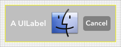
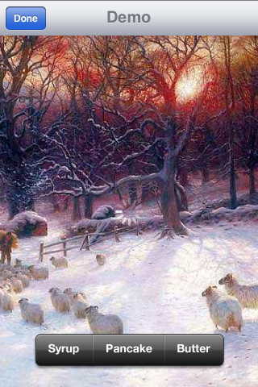
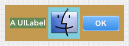
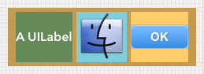
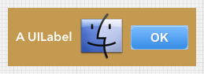
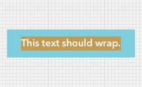
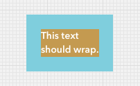
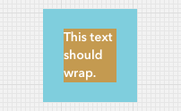

Next: Design Philosophy
Tutorial 3: The Layouts
The core class of this library is the WeView.
WeView is a subclass of UIView that can position its subviews using a variety of layouts.
Example 1
Let’s plunge right in with an example. Here is a WeView that contains a UILabel, a UIImageView and a UIButton.

Here’s the code:
- The three subviews use a horizontal layout.
- The layout has 5pt margins and 5pt spacing. These properties are like their HTML/CSS equivalents.
- The configuration methods [setMargin:] and [setSpacing:] are chained. WeView configuration methods return a reference to the receiver whenever possible to allow chaining, ie. invoking multiple methods on the same instance. Chaining reduces the need for boilerplate code. Chaining is optional.
- The subviews are layed out at their desired size, ie. the size returned by [UIView sizeThatFits:].
- The key idea: Although the WeView needs to be layed out as usual, it takes care of laying out its subviews. It is not necessary to ever set the size or position of any of the subviews - in fact, their existing size and position are ignored by the WeView layout.
Example 2
Here’s another example:

Here’s the code:
- There are two WeViews in this layout: the outer rootView and the inner bodyView.
- The rootView contains the toolbar and bodyView in a vertical layout.
- The bodyView is configured with [UIView setStretches] which indicates to the layout that it should be stretched to receive any extra space in the layout.
- The bodyView is also configured with [UIView setIgnoreDesiredSize] which indicates to the layout that the desired size of this view should be ignored.
- A background image is added to the bodyView with a custom layout that exactly fills the bodyView’s bounds while retaining its aspect ratio.
- A group of three buttons is added to the bodyView using a horizontal layout. This layout has bottom alignment and a 20pt bottom margin.
- An activity indicator is added to the bodyView with its own layout. That layout doesn’t need to be configured, since the default behavior is to center subviews within their superview.
- The bodyView contains three separate groups of subviews: the background, the buttons and the activity indicator. Each group of subviews has its own layout. The layouts work independently and only affect their subviews.
- Each layout can be configured separately. For example, the buttons’ layout has bottom alignment, but that doesn’t effect the activity indicator because it has a separate layout.
The bodyView is also configured with [UIView setIgnoreDesiredSize] which indicates to the layout that the desired size of this view should be ignored.
 
A WeView layou

  
Next: Design Philosophy